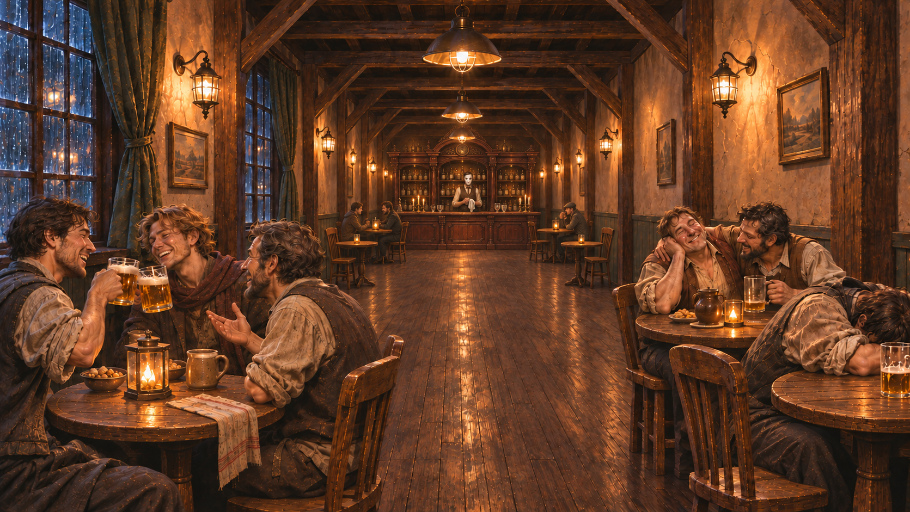

The Last Tavern / XX
当前目标
↑ ↓ / Tab 选择 Enter 确认Esc 查看暂停样张
Play logic
走进酒馆，走出赌约。
探索中完成教学、认识同伴；饮酒后进入地下。确认入局后开始三幕。失败结束当前桌，保留三类碎片和受损状态，重新开桌；这一失败转场为本稿建议。
→→→→→→

探索中完成教学、认识同伴；饮酒后进入地下。确认入局后开始三幕。失败结束当前桌，保留三类碎片和受损状态，重新开桌；这一失败转场为本稿建议。